New captures from this refinement only. Signal and Assets 01–03 are locked and unchanged. Nothing deployed. Packaging is a native structural concept, not a manufacturing-validated dieline.
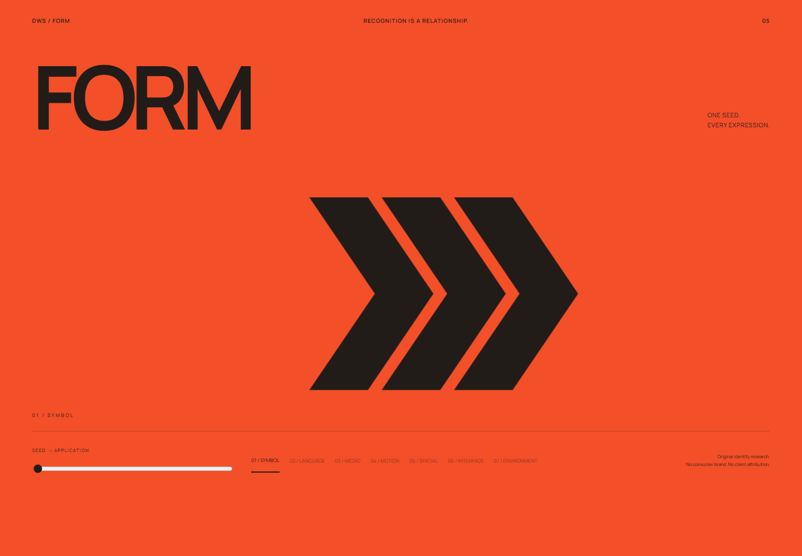
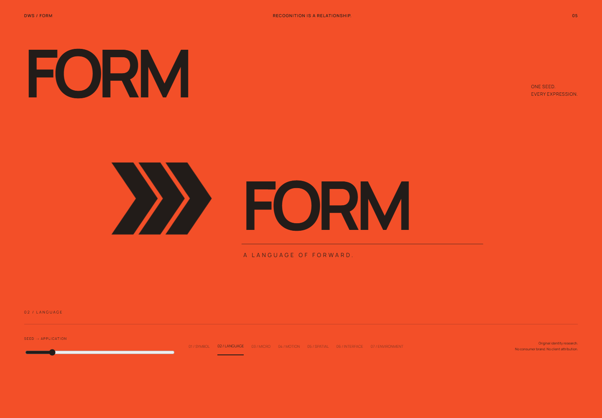
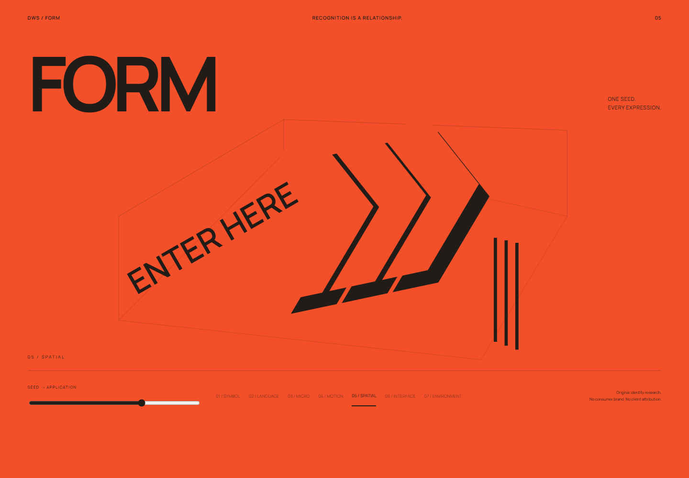
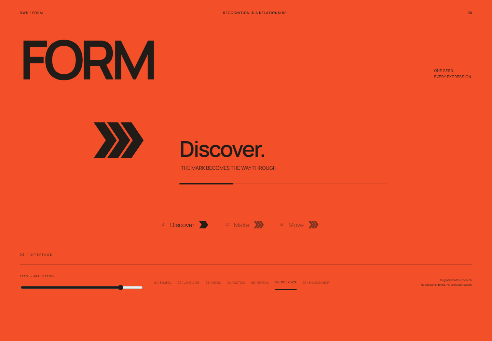
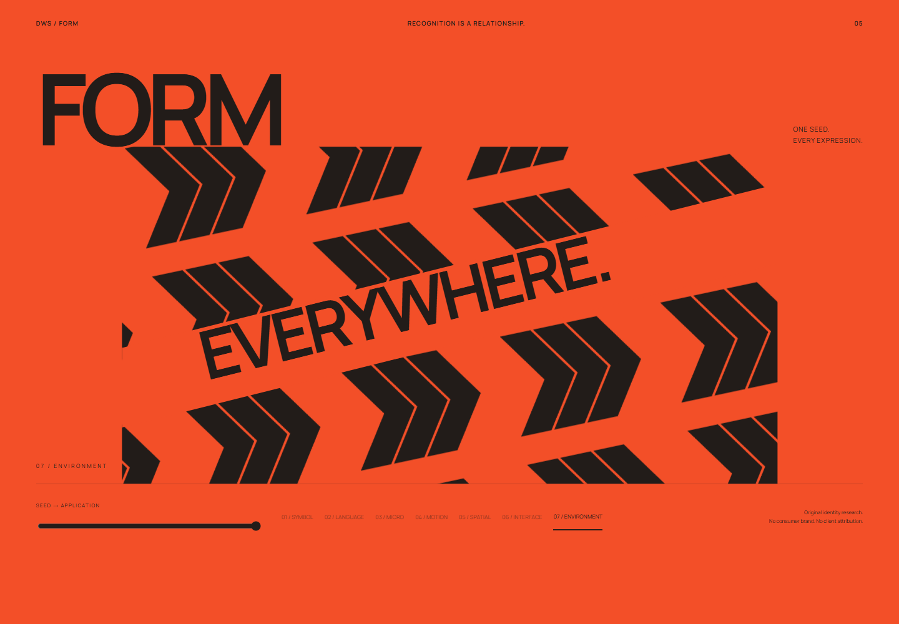
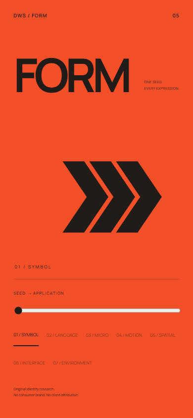
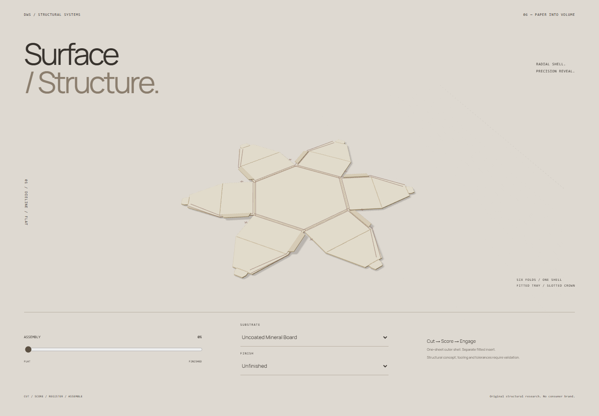
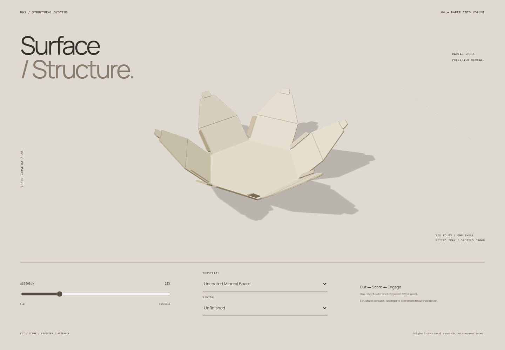
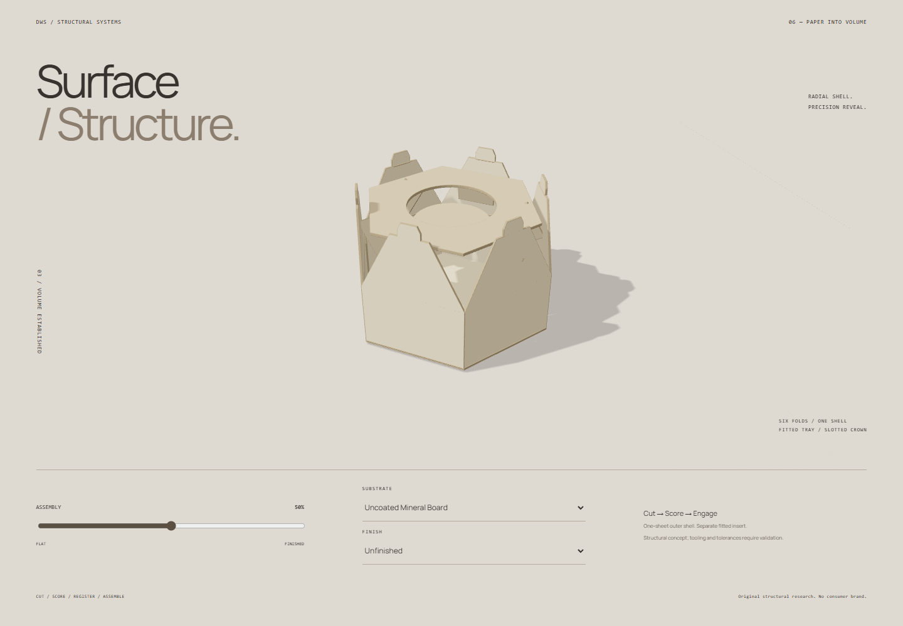
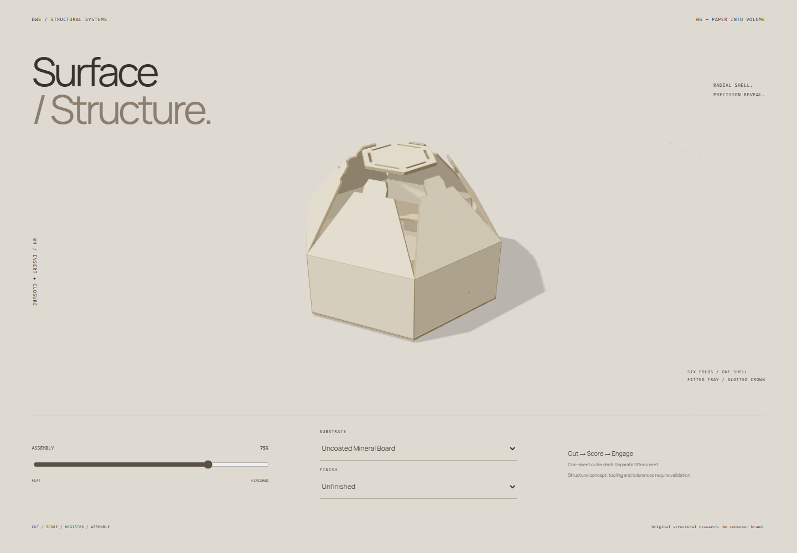
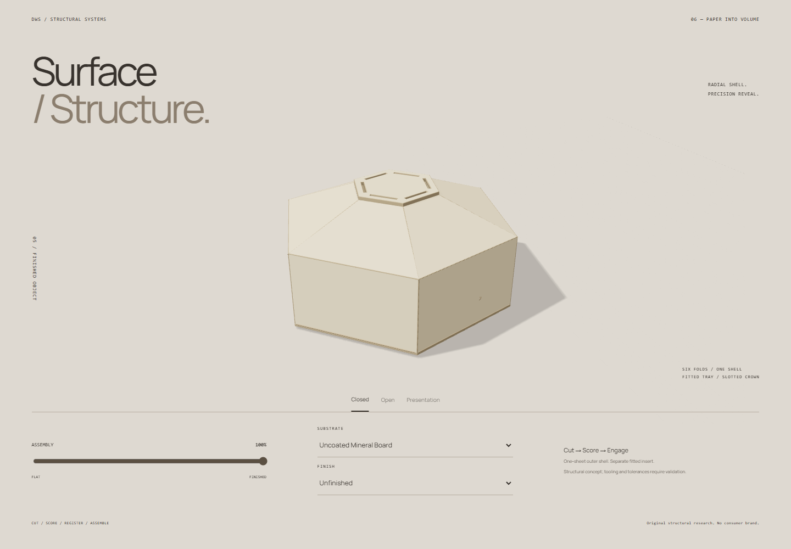
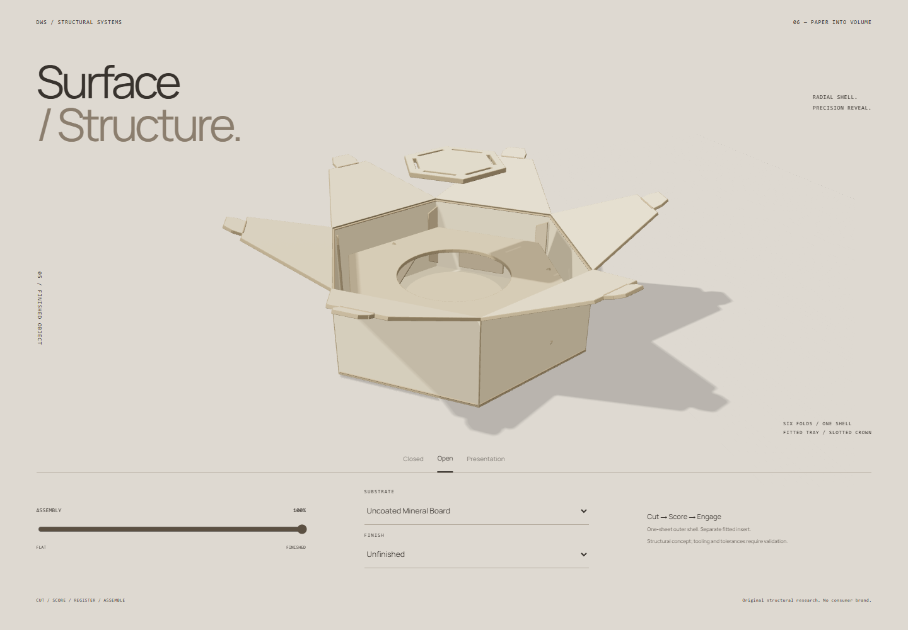
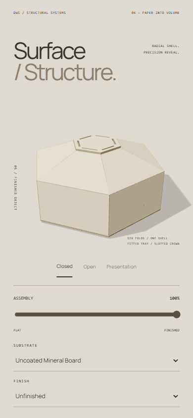